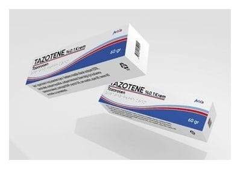

Tazotene %0.1 Krem, 60 Gram

Ne için kullanılır
KT · Bölüm 1TAZOTENE, beyaz, beyazımsı renkte bir kremdir. TAZOTENE, 30 gr ve 60 gr krem içeren polietilen kapak ile kapatılmış, alüminyum tüplerde ve karton kutuda kullanma talimatı ile beraber piyasaya sunulmaktadır. TAZOTENE, tazaroten etkin maddesini ihtiva eden, plak tipi sedef hastalığının harici tedavisinde ve sivilceli (akneli) hastaların harici tedavisinde kullanılan bir ilaçtır.